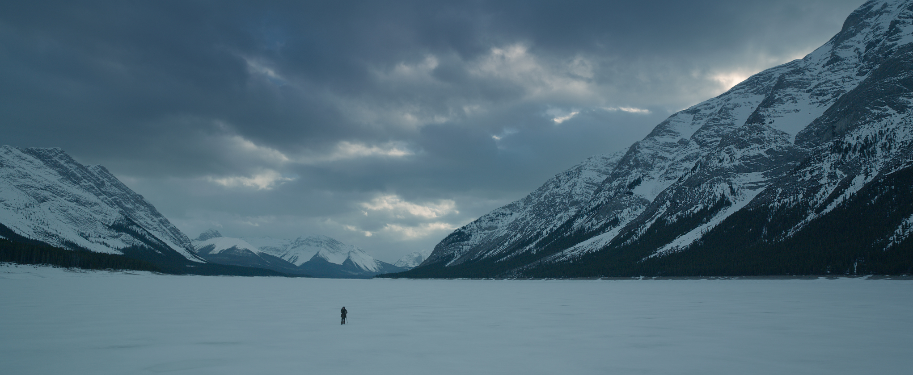
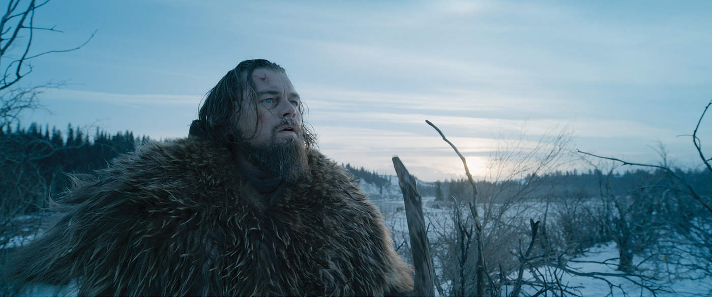
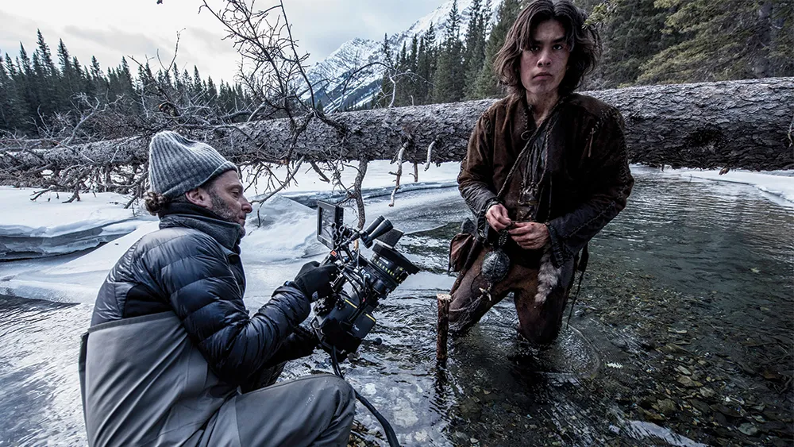
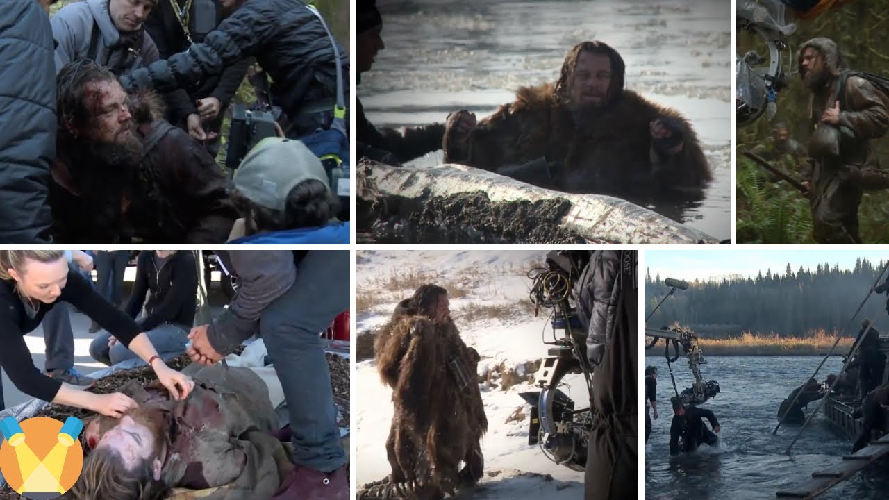
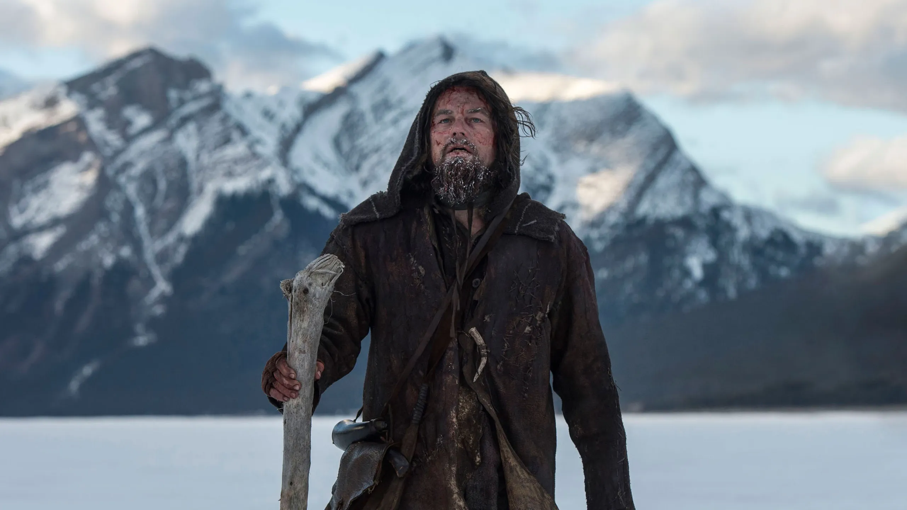

| Aktyor | Rol / obraz |
|---|---|
| Leonardo DiCaprio | Hugh Glass |
| Tom Hardy | John Fitzgerald |
| Domhnall Gleeson | Captain Andrew Henry |
| Will Poulter | Bridger |
| Forrest Goodluck | Hawk (Hugh Glass’ın oğludur, yarı yerli amerikalı bir övlad) |



Film 1823-cü ildə baş verir. Hugh Glass (Leonardo DiCaprio) cazibədar və təcrübəli bir ovçudur. O, American Frontier (“Vəhşi Qərb”) ərazilərində çalışır və bir gün bir ayı hücumuna məruz qalır. Ayı onu vəhşicəsinə yaralayır və onu demək olar ki, öldürülmüş vəziyyətdə qoyur. Dəstə üzvlərindən biri — John Fitzgerald (Tom Hardy) — liderin göstərişinə baxmayaraq Hugh’u tək qoyur və onu ölməklə baş-başa buraxır. Bununla birlikdə Hugh Glass sağ qalır və ağır yaralarla mübarizə aparır. Onun məqsədi təkcə sağ qalmaq deyil, həm də ona xəyanət edənləri tapıb ədalət tələb etməkdir. O, çox çətin şərtlər — don, aclıq, hücumlar, dağlıq terenlər — ilə üz-üzə qalaraq irəliləyir. Film boyunca Hugh Glass’ın insan gücü, əzmi və qisas arzusu mərkəzi motiv olur. Eyni zamanda təbiətin sərtliyi, insan və təbiət münasibətləri, vicdan məsələləri filmə dərinlik verir.
